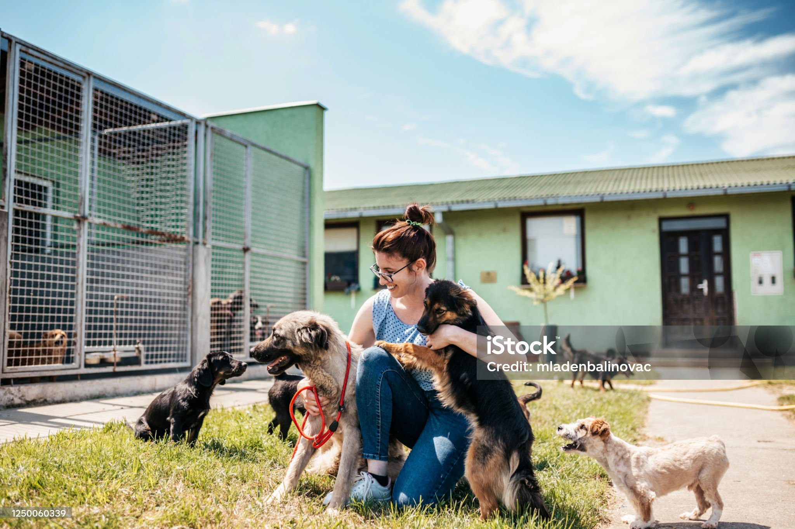
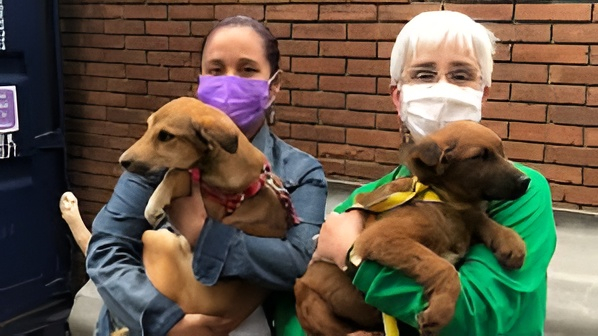
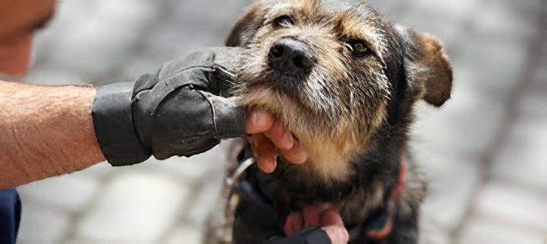
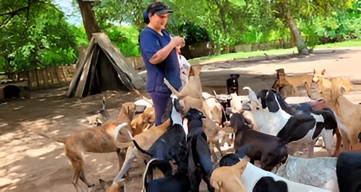
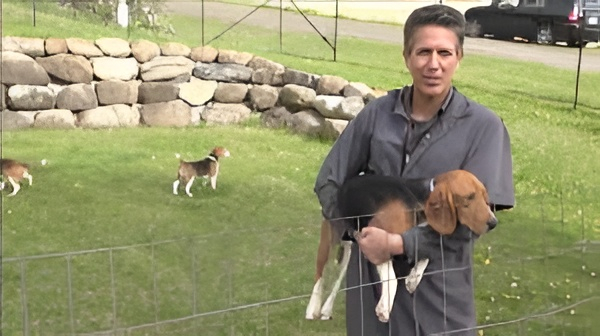
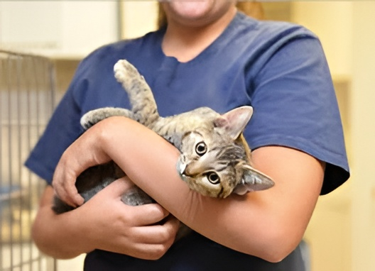
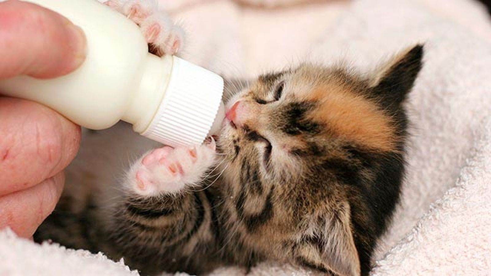

Patitas Felices
Nuestra Galería

Jornadas de rescate en la ciudad

Atención veterinaria integral

Entregando amor a nuevas familias

Adopciones responsables en nuestra ciudad

Rescatamos, cuidamos y entregamos amor

Segundas oportunidades llenas de amor

Animales rescatados buscando hogar

Adopta y cambia una vida

Jornadas de rescate y adopción